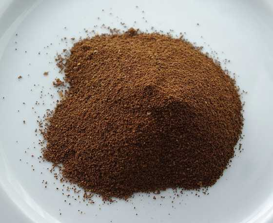
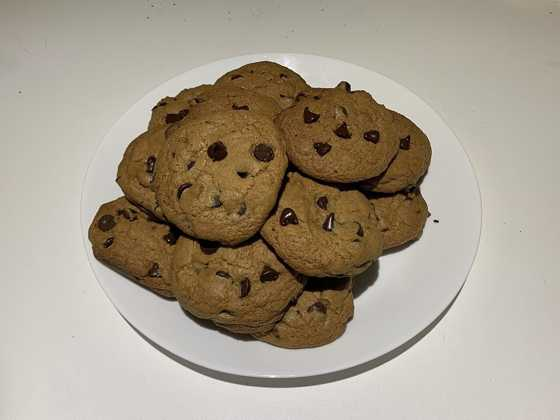
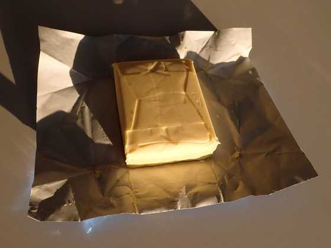
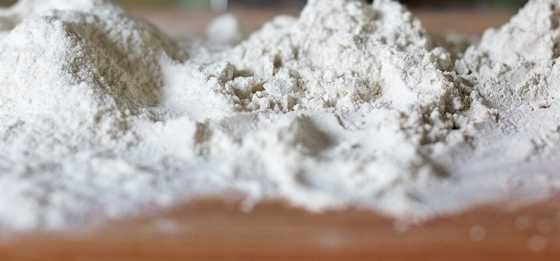
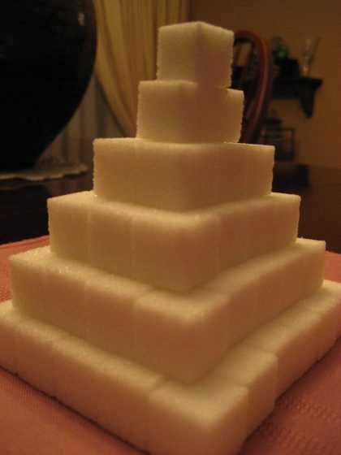
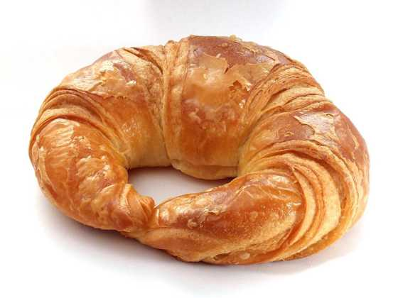

池田湖と開聞岳を望む / 鹿児島県指宿市
yokatoko cafe
「ここはよかとこやね」のひとことから生まれた、ふらっと立ち寄れる湖畔のカフェ。

池田湖と開聞岳を望む / 鹿児島県指宿市
「ここはよかとこやね」のひとことから生まれた、ふらっと立ち寄れる湖畔のカフェ。
ご近所のおばあちゃんの一言から
店名は、近所に住むおばあちゃんの「ここはよかとこやね」という言葉に由来すると、店主の米玉利さんが紹介記事で語っています。池田湖と開聞岳を望む場所で、もとは屋外サウナを考えていたところ、準備中にコーヒーを淹れたことがカフェを開くきっかけになったそうです。
もとからあった建物を、廃材や流木を使ってリノベーション。「みんながふらっと立ち寄れる場所にしたい」という想いが語られています。屋根のない開放的なテラス席やハンモックもあり、敷地内にはオートキャンプ場も併設されています。
出典:休活トリップ(leapleap.jp)、指宿観光協会サイト、個人ブログの紹介記事(2023年時点)。現在の状況はInstagramでご確認ください。
フリー素材のイメージ
写真はフリー素材のイメージで、店舗の実際の様子・商品ではありません。実際の写真はご提供のものに差し替えます。










制作側が創作した例です。実在の声ではありません。
〒891-0312 鹿児島県指宿市池田3143-1
駐車場あり(紹介記事より)。電話: 準備中